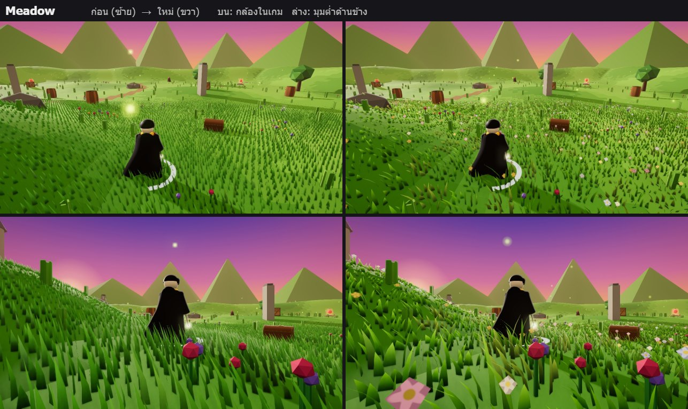
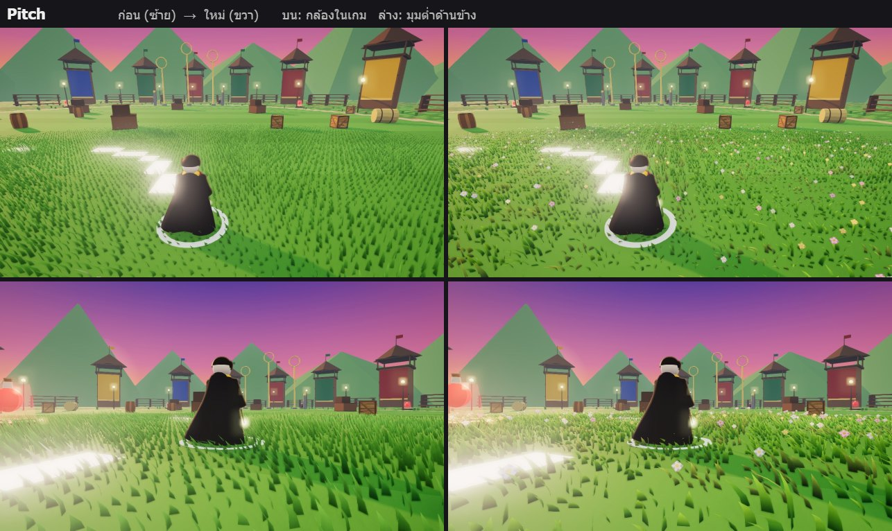
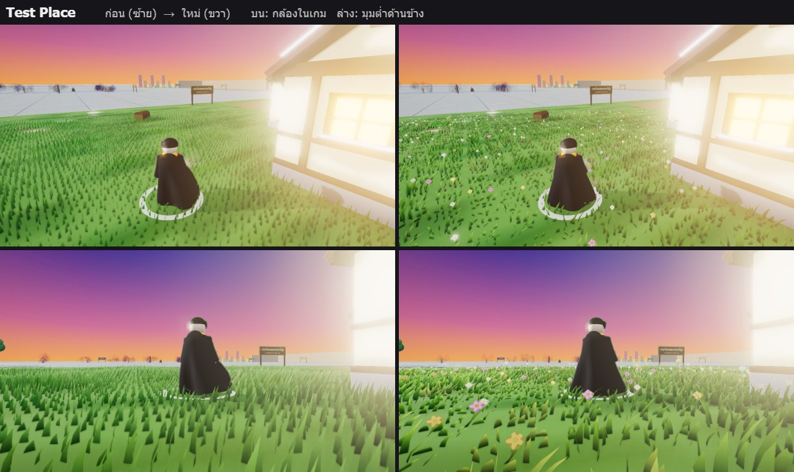
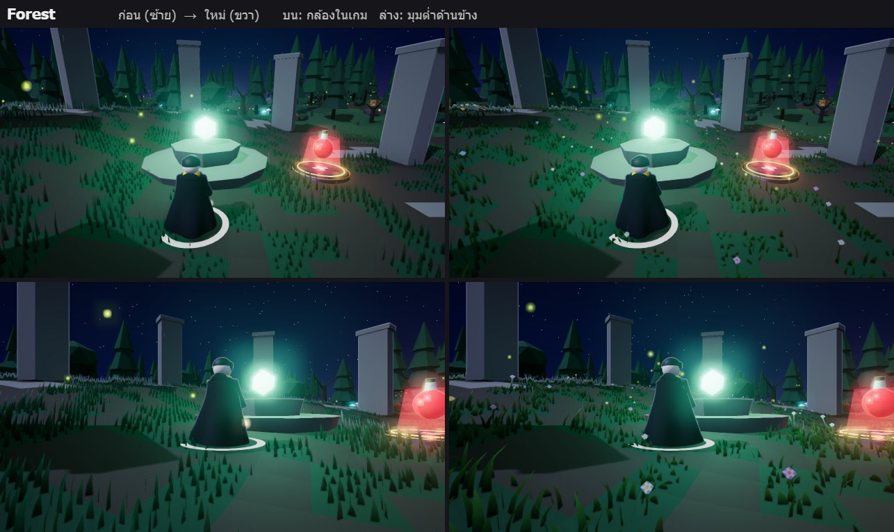

🌾 หญ้าใหม่ (แผนสนามรบ ขั้น 3 ส่วน A) — ก่อน ซ้าย / ใหม่ ขวา
บน = กล้องในเกม • ล่าง = มุมต่ำด้านข้าง • 4 แผนที่: Meadow, Forest, Pitch, Test Place (แผนที่ Valley ยังเล่นไม่ได้)
- ใบโค้ง 3 ช่วง • โคนเข้ม ปลายอ่อนออกเหลือง • แสงทะลุใบเวลาย้อนแสง
- ขึ้นเป็นกอ สูงต่ำไม่เท่ากัน บางกอแห้งเหลือง • 3 แบบใบปนกัน + ดอกไม้เล็ก 4 สี (~2%)
- ลมเป็นคลื่นใหญ่วิ่งผ่านทุ่ง (ยอดคลื่นใบสว่างขึ้น)
- เครื่องนี้: หญ้ากินการ์ดจอ ~0.65 → ~0.75 ms ต่อเฟรม (แทบเท่าเดิม) • กราฟิกต่ำ/อัตโนมัติยังลดหญ้าเหมือนเดิม



